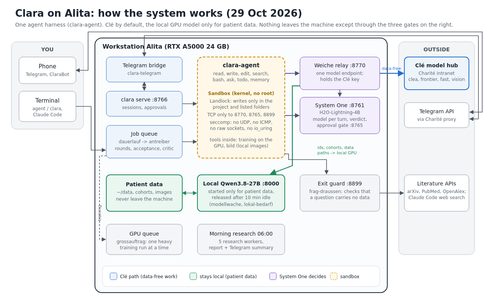

![From a question to a QC page: prompt from phone or terminal; research by Clé and literature workers through the exit guard; a method shortlist where each method becomes a job with a countable acceptance list; the job queue runs one method at a time; in the inner loop Clara writes the code in the sandbox, the GPU queue trains, the acceptance check counts facts and the critic reads, open criteria start the next round; then evaluation on the test set next to the leaderboard and the result with a QC page](abbildungen/4-question-to-qc.png)
One request, read left to right, using "I want to create a WMH segmentation model, can you research it?" as the example:
Everything after the prompt runs on the workstation: the calls to Clé, the research agents, the harness, training and evaluation. Clara sees the data and has no network access. The research agents reach the network and Clé, and never see the data.
Shared GPU time is too slow for this kind of work. On the institute cluster, a job asking for a whole GPU was scheduled about 9 hours ahead; only 7 of the cards have 80 GB. A small share of a card starts within seconds, but it only fits small trainings (measurement, 16 Oct 2026). An agent that builds a model, trains it, finds an error and tries again needs dozens of such rounds a day. With a queue in between, each round costs hours; on the workstation it costs minutes.
A local model can look at the patient data; a cloud model cannot. Clara runs on the workstation, so the images never leave the machine. That lets her do what a remote model may not: open every scan, read every mask, run the model on the whole cohort, and look at the cases where it fails. She sees far more of the data than any summary would carry, and she sees it fast.
Local is a route, not a permission. Whether a dataset may be processed by an AI system at all is decided by its data agreement, and a clause that forbids it binds the local model too (rule). Where processing is allowed, running it locally keeps the data inside the institution.

| Part | Runs on | Patient data | Network | Used for |
|---|---|---|---|---|
| Prompt | any device: phone app, desktop PC, browser | no | yes | stating the goal; nothing else happens there |
| Clé | Charité on-premise model hub (intranet), called from the workstation | no | yes | interpreting the request, splitting it into questions and tasks |
| Research agents | workstation, using Clé | no | yes | searching papers and code for methods and architectures |
| Clara | workstation, clara-agent; model per turn: Clé for data-free work, local Qwen3.8-27B for patient data | yes (local model only) | no (loopback only, kernel-enforced) | writing the code, training, running and inspecting models on the data |
| Relay | workstation, port 8770 | checks every request | Clé only | fixed rules first (ids, cohort names, data access -> local), then System One picks the Clé model per turn and judges each answer |
| System One | workstation, small decision model | no | no | model choice per turn, verdict per answer, approval gate for commands |
| Harness | workstation | through Clara | no | the outer loop over methods and the inner loop until a task passes |
| Check | workstation | counts only | no | acceptance criteria as countable facts; asks no model |
| Exit guard | workstation, port 8899 | blocks it | checked questions only | Clara's only way out: technical questions without data reference |
| Blackboard | workstation and repo | no | via the repo | where Clara and the cloud model report progress to each other |